Week 9 · Semester 1 · 11 – 16 Oct
Submitting the Proposal
Trigger
Workcheck and submission
Week 9 was the Research Proposal deadline and the work-check presentations, where we showed the current state of our graduation project, timeline and dissertation plans, with the CPJ up to date. I submitted the proposal, titled Invisible Process: Man & Machine — Experiments in designing a gesture-based grammar for AI-compiled generative visuals, with my own three pillars: Embodied interaction, Rules & Medium, and System Visibility.
Process
The workcheck presentation
My workcheck deck had 23 slides. It opened with the problem as I saw it then: typed prompts put a delay between intention and result, and the rules that turn intention into code are set by the AI, not the designer, so decisions stay hidden rather than legible. The objective was to design a gesture-based grammar, compiled by an AI into p5.js, to make a designer's generative decisions legible, for designers and creative technologists.
The method was a critical journal through Research through Design and prototyping. I drew it as a cycle: make gesture vocabulary 1, reflect on agency, meaning and understanding, make vocabulary 2 by defining object, meaning and interaction, contextualise different gestures, then make vocabulary 3. The system was one line: gesture as language, plus AI as compiler, gives generative visuals.
Then came the three pillars and the readings that shifted me (MAGIC, Wekinator, Brainfuck and Piet, Metaphoraction, Galloway), and six experiments from the catalogue of making, including the hand-tracked esolang interpreter, where five staff lines stand for five fingers. I planned the table as a screen for the main artefact, an introduction, the catalogue of making and a user manual of gestures. The last slides tested basic gesture syntax: opening and closing a hand to scale, rotation for movement, then a grid, shapes and kinetic movements. My next steps were to understand different processes and algorithms, find a way to define gestures, and work out how to use AI as a compiler.
Building the deck was really about justifying why a gesture-based programming language, and how to make it clear to people that it is necessary. Andreas had said my research question was too tight and too narrow, so I brought in a lot of new literature. The basic gesture slides came from sketches I had already built, the hand-movement experiments, where I was trying to contextualise things and work with my hands. Looking back, at this point I was still leaning towards an interface. I hadn't yet gone deep into figuring out what a programming language is.
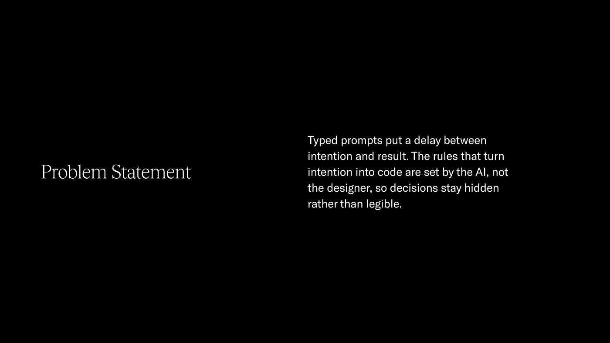
The problem statement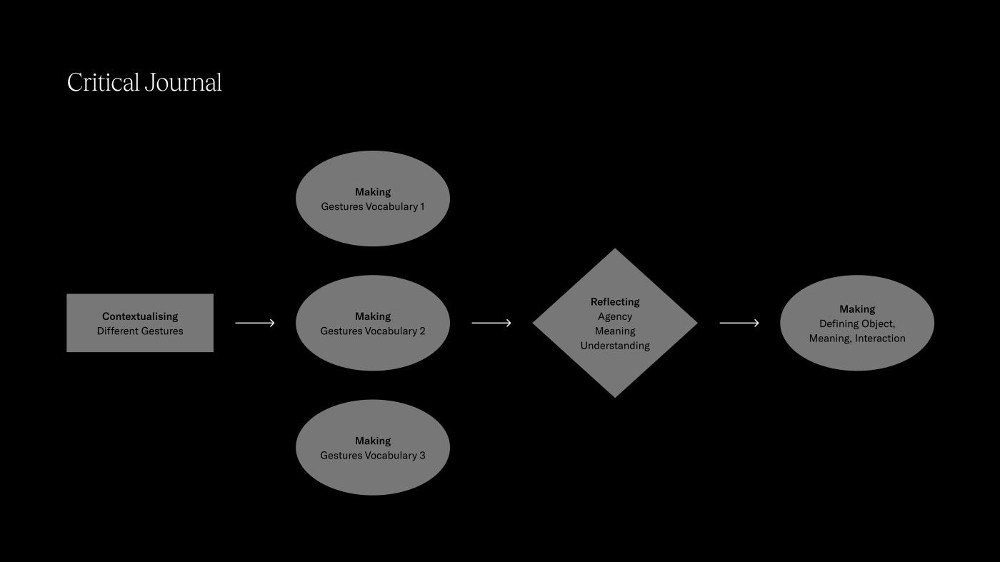
The critical-journal cycle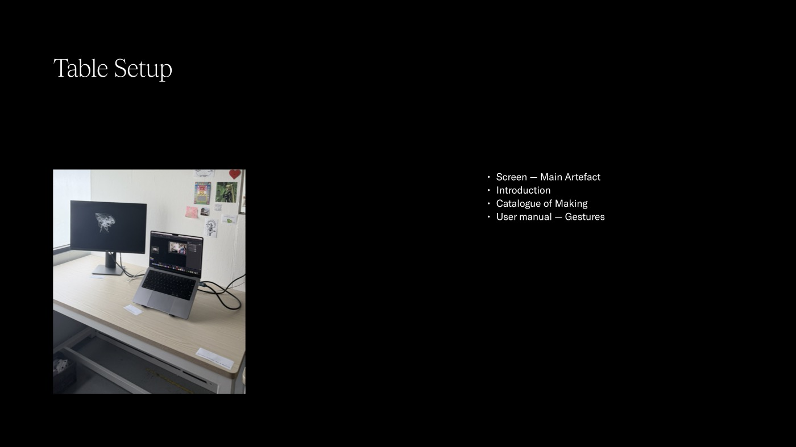
The table setup
References
The readings that shifted me
Andreas felt my question was too narrow, so I brought in new literature. Five readings shifted how I saw the project.
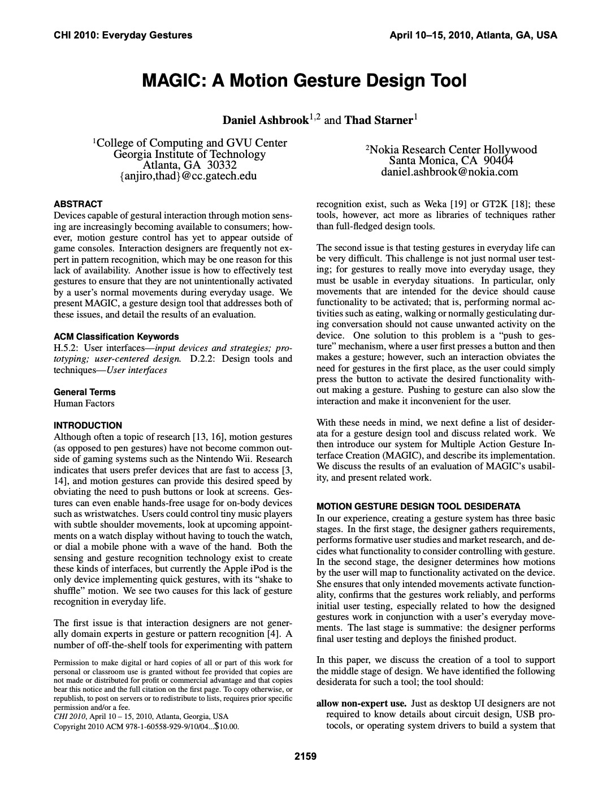
MAGIC (Ashbrook and Starner, 2010)
MAGIC is a tool for designers creating motion gestures. Its authors note that interaction designers are often not experts in pattern recognition, and that gestures must be tested so they are not set off by everyday movement. What its participants found most useful was video playback of their own gestures. They often forgot how they had made a gesture and used the video to remind themselves, while the sensor graph was the least-used view: it showed how big a movement was, but little else. For me it was about real-time feedback. Working while looking at yourself on the screen is different from just trusting a device, and the paper explains well how that kind of feedback affects us.
Wekinator (Fiebrink and Cook)
Wekinator lets people train a machine-learning model by demonstrating, in real time. For me this was about understanding what software already existed that could train models from movement.
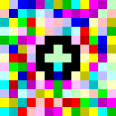
Brainfuck and Piet
Brainfuck is such an interesting esoteric language. It is made only of symbols and text, and to understand it you have to understand what each symbol does. Piet intrigued me more, because of the visual itself: a program is an image, and the language itself is a piece of art.
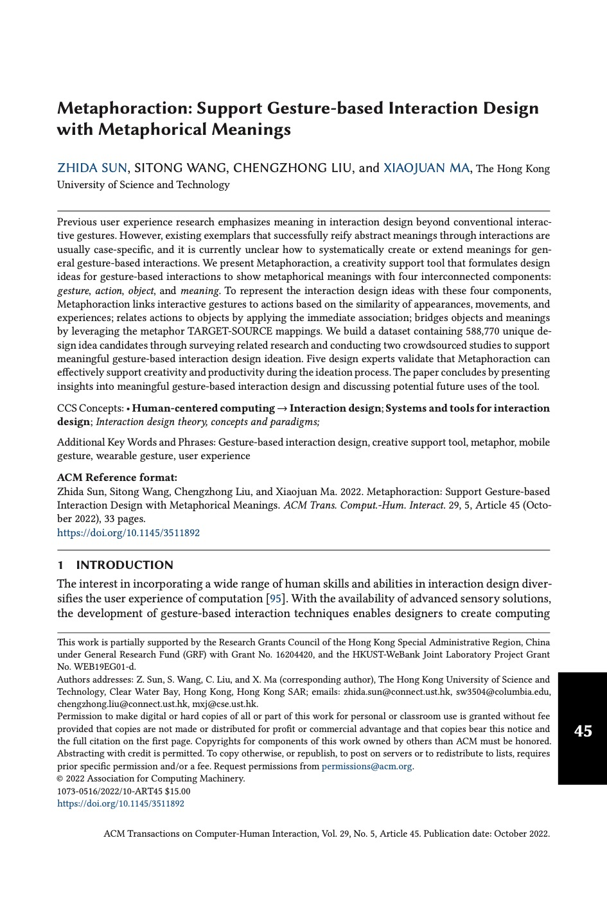
Metaphoraction (Sun et al.)
Metaphoraction maps gestures to action, object and meaning, so a designer decides what a gesture stands for instead of inheriting it by accident. This reading truly connected the link for me. It put into words that a gesture has meaning and is tied to something. When we gesture, it means something. It is not accidental.
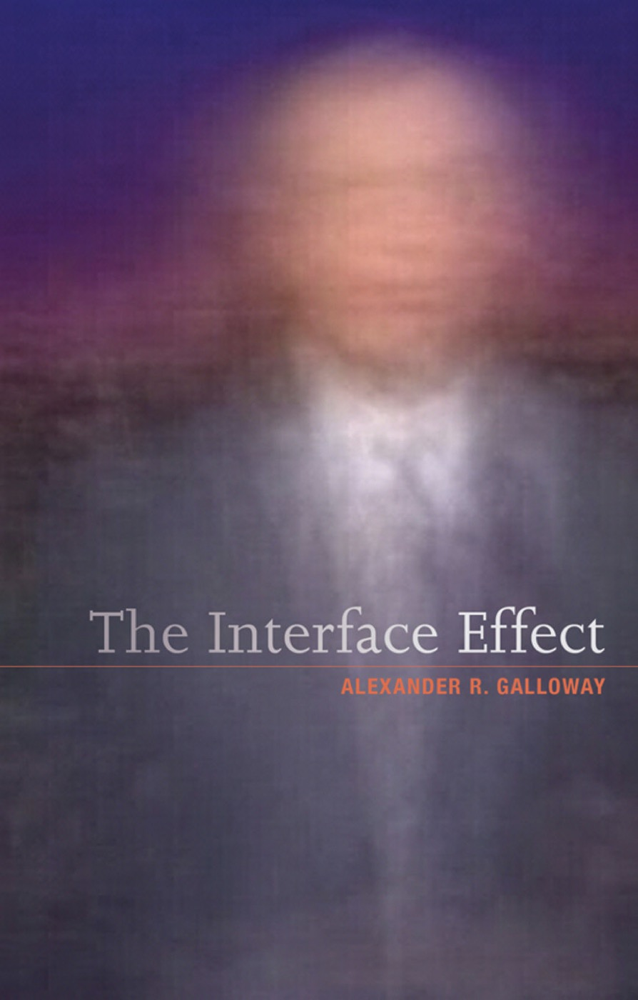
The Interface Effect (Galloway, 2012)
I read Galloway to understand why I need an interface at all, and what the difference is between being in front of the interface and behind it. It is a heavy book and I only read it briefly. Its key idea is that “an interface is not a thing, an interface is always an effect. It is always a process or a translation.” Interfaces present themselves as doors or windows we simply step through, but “the interface never admits it” (53). For my project, that means the translation from gesture to code is itself the interface, and showing it is never a fully transparent view.
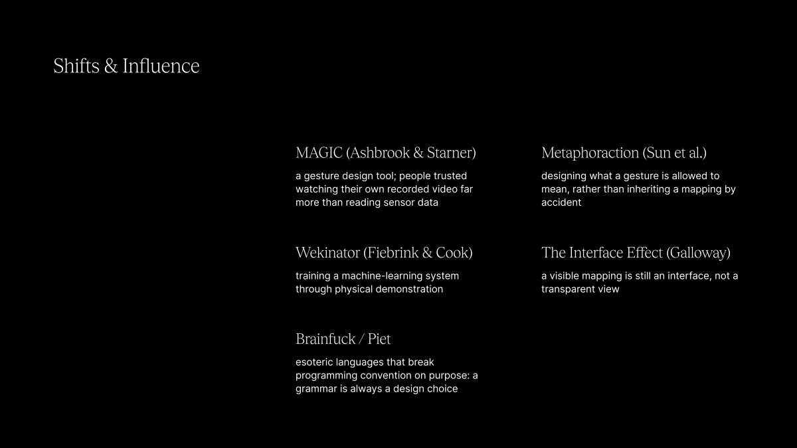
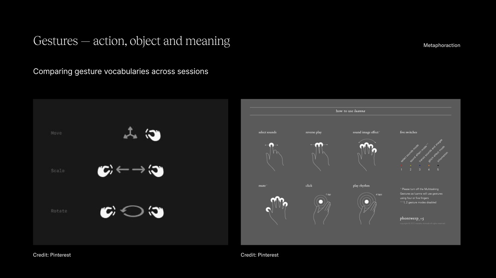
Experiment
Hands that switch systems
Idea. Building the workcheck deck, I was trying to justify why a gesture-based language is needed, and I wanted to work with my hands.
Why. To see whether a hand pose could switch whole systems, not just single shapes.
How. A closed fist shows a grid of squares that rotate with the hand, an open palm shows a Perlin flow field, and a pinch toggles four-way symmetry. I named the sketch “Vocabulary 2: rule switching”.
Reflection. The feedback was immediate and the visuals moved in sync with my hands. But it felt like working within a preset: an easy, fun interaction for others, but meaningless to me. I was interacting with an interface rather than defining a syntax, though the name shows I was already thinking about language without it being clear yet.
Why these gestures. These gestures are ones we are familiar with and use constantly. So I thought starting there would let me see more clearly what changes were made, and how the system is affected by my hands.
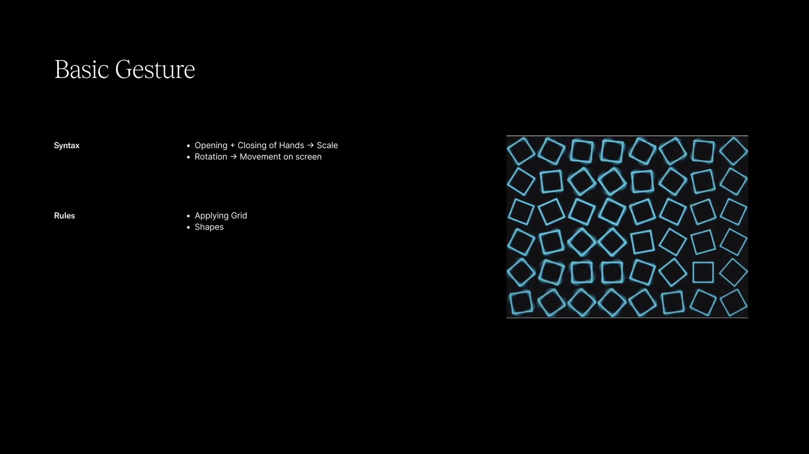
Basic gesture: open and close → scale; rotation; rules: grid, shapes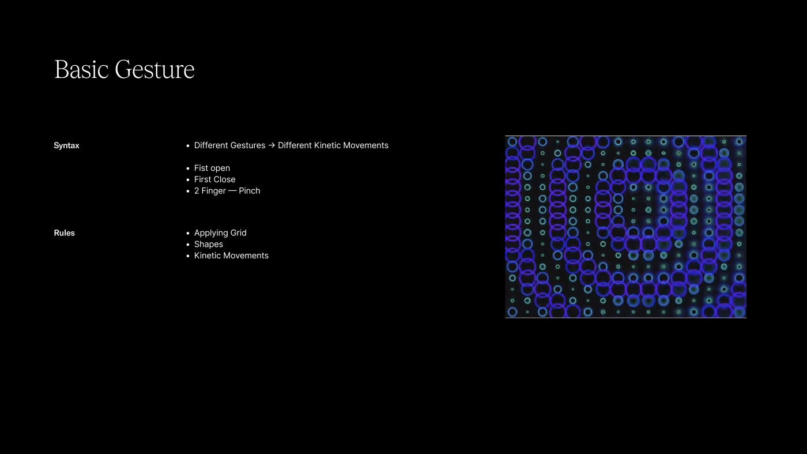
Different gestures → different kinetic movements
Fist → grid
Open palm → flow field
Feedback
Feedback Breakdown
The language has to be clear
The workcheck feedback went straight at the gaps. This needs the principles of a programming language. People might not understand why we are moving our hands in front of a camera. I have to develop the language to be very clear, the mapping has to be stronger, and “AI as a compiler” has to materialise. Where, exactly, do gestures turn into code? AI could be an enabler.
It has to be accessible
It is a topic not everyone is familiar with, and that is a risk: people need to see the value and the pattern. I was asked to make a glossary of all my terms and to keep it simple, manageable and repeatable, with gestures people can recognise. Videos of the interaction on the table would help me explain the meaning and the value.
Experiment
Meaningful and intuitive
Idea. Binary would be too complicated for anyone to use, so I needed a balance: gestures people already understand.
Why. To find gestures that have context, so they are intuitive, and still mean something to the machine.
How. A field of circles driven by one hand: pinch squeezes, stretch swells, and turning the hand twists the field.
Reflection. It was still an interface, but I was slowly seeing the links come together, and two rules came out of it:
A gesture should make sense intuitively. Don't ask someone to learn a brand-new gesture.
It also has to mean something to the machine.
Why circles. Circles are quite a memorable shape, so you can see a drastic change when you distort them. They look very different when you stretch or distort them.
The circle field
Open → bigger
On screen
Reflection
Reflecting
Back-talk. The hand-switching sketch talked back: it was immediate and in sync, but it felt like working within a preset. The machine did what I set; nothing came back that I hadn't decided.
Looking back. I was still in the mess of it all, slowly gaining clarity. My topic was too wide and I was a little behind, but it is a journey of self-discovery and I like it.
How I worked. I did read a lot of literature before I built this week, but it was more about coming to my own understanding, and using the readings to build on it.
Where the readings show up. Both experiments were heavily influenced by Metaphoraction. Sun et al. link a gesture to an action “based on the similarity of appearances, movements, and experiences”, then to an object and a meaning. My circle field works the same way: a stretch swells the circles and a turn of the hand twists them, so the movement on screen resembles the movement of the hand. Their gesture list even includes the gestures I used, such as squeeze, pinch, stretch (“splay”) and twist. They also found that most people treat devices as things to operate directly: 70.73% of the answers in their study were manipulative gestures, and the most common were “tap”, “turn”, “wipe”, “grab” and “press”. That is why I started from familiar gestures in the system-switching sketch. MAGIC added a caution: gestures have to be tested so everyday movement doesn't set them off.
Moving Forward
Looking back, I was still in the mess of it all, but slowly gaining clarity about what it actually is. My topic was too wide, and I had to understand certain things more, so there was still a lot of reading to do. I was a little behind and a little slow, but I think that is okay. This is a journey of self-discovery, and I really do like it.
The feedback set the next task: make the language clear, make the mapping visible, and work out where the AI actually sits.